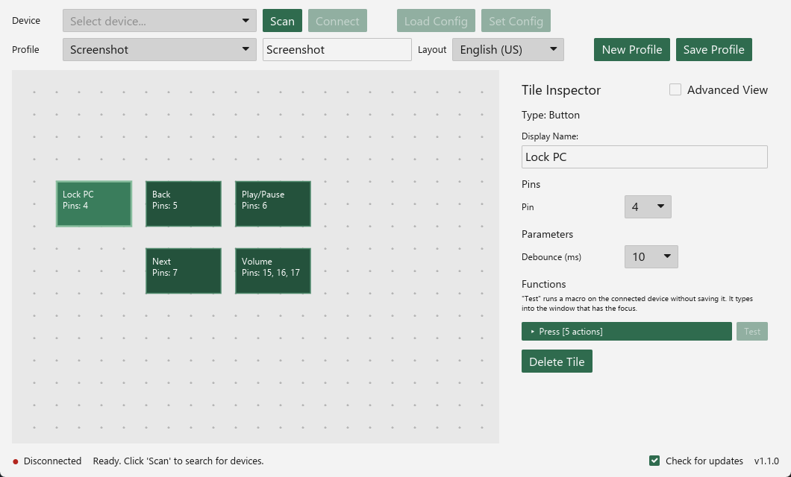
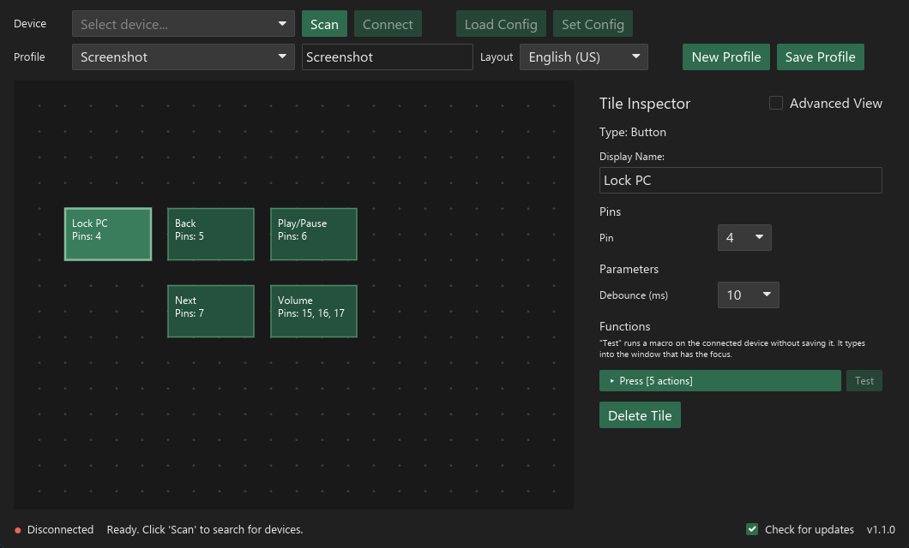

FlexPad
FlexPad is a freely configurable macro pad based on the ESP32-S3. The board acts as a USB keyboard and media controller and runs key sequences when a button is pressed or an encoder is turned. A cross-platform desktop app written in Rust (iced) lets you place buttons and rotary encoders on a canvas, assign GPIO pins and macros, and transfers the configuration to the device over USB serial. The firmware is written in Rust as well (esp-hal, Embassy).
Not affiliated with or endorsed by Espressif Systems.


Features
- Up to 25 inputs on one ESP32-S3: push buttons and EC11 rotary encoders
- Macros made of key presses and releases, delays, media keys and text
- Visual editor: place tiles on a canvas, assign pins and build macros from presets or step by step
- Debounce time, encoder resolution and direction adjustable per tile
- Profiles stored locally and on the device; the device works without the app once configured
- No driver, no account, no network access except an optional update check (see Privacy)
Hardware
| Part | Notes |
|---|---|
| ESP32-S3 board with native USB | Developed with an ESP32-S3 dev module with 16 MB flash and 8 MB octal PSRAM (N16R8) |
| Push buttons | One side to a GPIO pin, the other side to GND. Internal pull-ups are used, no resistors needed. |
| EC11 rotary encoder (optional) | Pins A and B to two GPIO pins, the middle pin C to GND. The push button of the encoder like a normal button. |
Usable pins: 1, 2, 4–18, 21, 38–42, 47, 48 (25 inputs). Left out on purpose: GPIO 0, 3, 45 and 46 (strapping pins), 19/20 (USB) and 33–37, which modules with octal PSRAM or octal flash (such as N16R8) use internally.
Installation
Download the app from Releases (releases named FlexPad <version>, tag v<version>). The app contains the matching firmware and installs or updates it on the board (see Firmware). The firmware is also published on its own as FlexPad firmware <version> (tag firmware-v<version>). Changes are listed in the changelogs of the app and the firmware.
App
Windows: run FlexPad-<version>-windows-x64-setup.exe. It installs for the current user without administrator rights (to %LOCALAPPDATA%\Programs\FlexPad); "Install for all users" installs to C:\Program Files\FlexPad and asks for administrator rights. Options: Start menu entry (on), desktop shortcut (off). Instead of the installer you can use the portable archive …-windows-x64-portable.zip.
macOS: open …-macos-arm64.dmg (Apple silicon) and drag FlexPad into the Applications folder.
Linux: on Debian, Ubuntu, Linux Mint and similar, install flexpad_<version>_amd64.deb (e.g. sudo apt install ./flexpad_1.2.0_amd64.deb); on Fedora, openSUSE and similar, install flexpad-<version>-1.x86_64.rpm (e.g. sudo dnf install ./flexpad-1.2.0-1.x86_64.rpm). Both add FlexPad to the application menu. For other distributions, extract …-linux-x64.tar.gz and start flexpad; it needs libudev. To access the USB serial port, your user must be in the group dialout (Debian, Ubuntu, Fedora) or uucp (Arch): sudo usermod -aG dialout $USER, then log in again.
The app is not signed, so the system may warn on the first start:
- Windows: SmartScreen → "More info" → "Run anyway"
- macOS: the app is not notarized by Apple. On the first start macOS refuses to open it; then choose System Settings → Privacy & Security → "Open Anyway" (on older versions: right-click the app → "Open"). This is needed only once.
Each download has a .sha256 file to verify it.
Installer parameters
| Parameter | Effect |
|---|---|
/CURRENTUSER | Install for the current user only (default) |
/ALLUSERS | Install for all users (asks for administrator rights) |
/DIR="C:\Path" | Installation folder |
/SILENT, /VERYSILENT | Without wizard (with or without progress window) |
/SUPPRESSMSGBOXES | No message boxes in silent mode |
/TASKS="desktopicon" | Add a desktop shortcut; without the parameter there is none |
/NOICONS | No Start menu entry |
/LOG="C:\Path\setup.log" | Write a log file |
Example: FlexPad-1.2.0-windows-x64-setup.exe /VERYSILENT /SUPPRESSMSGBOXES /TASKS="desktopicon"
Profiles and settings are stored per user and are not set by the installer. Uninstalling removes the program and its shortcuts but keeps your profiles and settings (see Privacy for the folders).
Firmware
The app contains the firmware of its own version and writes it itself, no extra tool needed:
- Update: if the connected FlexPad runs an older firmware, a bar above the canvas shows "Update firmware". The app restarts the FlexPad into its bootloader, writes the firmware and restarts it.
- First installation or recovery: hold BOOT, press RESET, release BOOT (or hold BOOT while plugging in the board), then click Scan. A bar above the canvas shows "Install firmware" for the board in bootloader mode.
Do not unplug the board while the progress bar is shown. If the board does not restart by itself afterwards, press RESET or unplug it briefly. The profile stored on the device is kept: only bootloader, partition table and app are written, and the image ends before the profile partition.
Alternatively, FlexPad-firmware-<version>-esp32s3.bin from the firmware release contains bootloader, partition table and firmware in one image for an ESP32-S3 with at least 8 MB flash. It is written with espflash (prebuilt downloads on its releases page, or cargo install espflash):
- Put the board into download mode: hold BOOT, press RESET, release BOOT. If the FlexPad firmware is already running, sending
REBOOT_BOOTLOADERover its serial port does the same. espflash write-bin --chip esp32s3 --no-stub --before no-reset --after no-reset --port <port> 0x0 FlexPad-firmware-<version>-esp32s3.bin- Press RESET (or unplug the board briefly). The board then shows up as "FlexPad".
A profile already stored on the device is kept: the image ends before the profile partition.
Usage
- Connect the FlexPad via USB and start the app.
- Scan, select the device and Connect.
- Choose the Keyboard layout of the computer the pad is used with; the key names in the macro editor follow it.
- Load Config reads the configuration stored on the device.
- Add tiles with Add Tile (button or EC11 encoder), drag them into place and select one to edit it in the Tile Inspector:
- Pins: choose the GPIO pin for each connection of the component (only free, usable pins are offered),
- Parameters: debounce time, and for encoders the steps per detent and the direction,
- Functions (e.g. press, turn right, turn left): open one to edit its macro,
- in a function, build the macro from Presets or add actions (Press, Release, Delay, Media, Text) one by one. Advanced View shows the macro as raw JSON for editing.
- Test next to a function runs its macro once on the connected device without saving anything; the answer (queued, busy or the reason for an error) is shown at the function. The macro types into the window that has the focus; text uses the keyboard layout of the profile stored on the device.
- Save Profile stores the profile on your computer, Set Config sends it to the device.
Wiring test: while the app is connected, pressing a button or turning an encoder briefly highlights its tile on the canvas, and the status bar names the pin (e.g. "GPIO 12 pressed – not assigned" for a pin no tile uses).
How it works
The firmware polls the configured pins every millisecond, debounces buttons, decodes encoders and runs the assigned macro as USB HID keyboard and consumer control (media keys) reports. The profile is stored as JSON in its own flash partition with two slots and a checksum, so it survives a restart and an interrupted save.
The app and the device talk over the USB serial port of the board (line-based text commands, each terminated with \n). The complete protocol and profile format are described in docs/protocol.md; overview:
| Command | Response |
|---|---|
GET_DEVICE_INFO | DEVICE_INFO:FlexPad,<serial number>,<firmware version> |
GET_CONFIG | CONFIG_DATA:<profile JSON> |
SET_CONFIG:<profile JSON> | CONFIG_SAVED, or CONFIG_ERROR:<reason> (e.g. unusable_pin:35, duplicate_pin:4) without changing the stored profile |
RUN_MACRO:<function JSON> | Runs a macro for testing, e.g. RUN_MACRO:{"actions":[{"media":"mute"}]}: MACRO_QUEUED, or MACRO_ERROR:<reason> |
REBOOT_BOOTLOADER | REBOOTING:bootloader, then the board restarts in download mode for flashing |
| – | Sent by the device: EVENT:PIN:<pin>:PRESSED/RELEASED and EVENT:ENCODER:<pin a>:RIGHT/LEFT |
Each function of a tile holds a macro as a list of actions: {"press":"<key>"}, {"release":"<key>"}, {"delay":<ms>}, {"media":"<action>"} and {"text":"<text>"} (typed with the keyboard layout chosen in the profile; English (US) or German). Example (copy): {"actions":[{"press":"ControlLeft"},{"press":"KeyC"},{"delay":50},{"release":"KeyC"},{"release":"ControlLeft"}]}. Older profiles with comma-separated macro strings (P:ControlLeft,P:KeyC,…) are converted when loaded.
Key names describe the physical key position on a US keyboard, using the names of KeyboardEvent.code (KeyA, Digit1, ControlLeft, Semicolon, IntlBackslash, NumpadAdd, F13 …). On a German layout, Semicolon therefore types ö and KeyZ types y. The app shows the keys with the labels of the keyboard layout chosen in the profile (e.g. KeyY as "Z" on a German layout); older names from earlier versions (lctrl, ael, kp_1 …) are converted when a profile is loaded. Macros run in the background: the device keeps answering serial commands, and all keys are released when a macro ends.
Privacy
- The firmware never connects to the internet. The app makes one optional request, the update check: at start and then every 24 hours while it runs, it sends an HTTPS GET request to
https://api.github.com/repos/TripleT3005/FlexPad/releases/latestand receives the information about the latest release (version number and link), which is compared with the installed version; if it is newer, "Version x.y.z available" appears in the status bar at the bottom and opens the release page in your browser when clicked. Nothing is downloaded or installed. GitHub sees your IP address and theUser-AgentFlexPad/<version>; nothing else is sent. Switch it off with Check for updates in the status bar (saved in the settings); then the app makes no request at all. - The app only talks to serial ports on your computer. To find FlexPad devices it only opens USB serial ports whose USB serial number starts with
FlexPad-(Espressif vendor ID303A) and asks them withGET_DEVICE_INFO; other devices are not touched. A scan also looks in the port list for an ESP32-S3 in bootloader mode (303A:0009) without opening it; that port is only opened when you click "Install firmware" or "Update firmware". - Profiles and settings are stored per user: on Windows in
%APPDATA%\FlexPad, on macOS in~/Library/Application Support/FlexPad, on Linux settings in~/.config/flexpadand profiles in~/.local/share/flexpad(or the folders set inXDG_CONFIG_HOMEandXDG_DATA_HOME). Files from the folderFlexPadin the home directory used by earlier versions are moved there once on start. Position and size of the window belong to the computer and are kept inwindow.json: on Windows in%LOCALAPPDATA%\FlexPad, on macOS next to the settings, on Linux in~/.local/state/flexpad(orXDG_STATE_HOME). The device stores the complete profile you send to it, so Load Config shows the same profile on any computer. Older profiles are converted to the current format when loaded. - The device identifies itself with a serial number derived from the chip's MAC address.